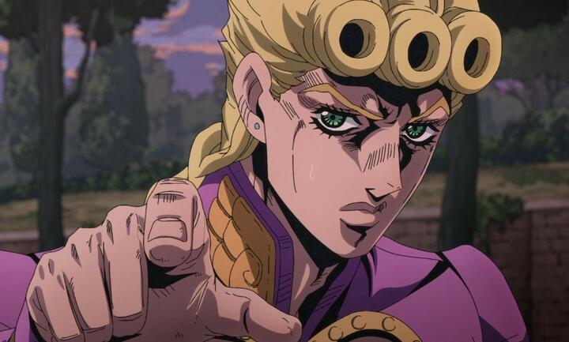

Неймовірні пригоди ДжоДжо
 -Серія випусків манги, автором та ілюстратором якої є Хірохіко Аракі. З 1987 по 2004 рік серія публікувалася в журналі Weekly Shonen Jump, потім випуск глав був перенесений до щомісячного сейнен-журналу Ultra Jump. JoJo's Bizarre Adventure є другою серед найбільших серій манги видавництва Shueisha і включає 135 томів, поступаючись лише Kochikame, що складається з 200 томів.
-Серія випусків манги, автором та ілюстратором якої є Хірохіко Аракі. З 1987 по 2004 рік серія публікувалася в журналі Weekly Shonen Jump, потім випуск глав був перенесений до щомісячного сейнен-журналу Ultra Jump. JoJo's Bizarre Adventure є другою серед найбільших серій манги видавництва Shueisha і включає 135 томів, поступаючись лише Kochikame, що складається з 200 томів.
-Історія дев'яти частин манги розгортається навколо пригод Джонатана Джостара та її нащадків: кожна частина представляє читачеві окрему історію і нового героя, здатного застосовувати у бою надприродні здібності. У манзі також описані події, що відбуваються в паралельному всесвіті світу ДжоДжо - 7, 8 і 9 частини.
-На основі манги було створено 13-серійну OVA (1993—2002), повнометражний анімаційний фільм (2007), повнометражний ігровий фільм (2017) та п'ять сезонів серіалу (2012—2022) виробництва студії David Production. Крім того, за мотивами JoJo було видано книги у форматі ранобе та створено комп'ютерні ігри.
-Критики переважно позитивно оцінили JoJo's Bizarre Adventure як франшизу в цілому. Зокрема, ними було відзначено самобутній дизайн та сюжетний розвиток манги, гарне опрацювання навколишнього світу та сеттингу. На думку оглядачів, бойові сцени також вигідно виділялися тим, що перемогу протагоністів зумовлювала не сила супротивника, а здатність продумувати виграшну стратегію бою, але, з іншого боку, битви часто вирізнялися зайвою жорстокістю.
-Кожна окрема частина серії має свої переваги і недоліки: перші дві частини манги були визнані найслабшими у франшизі; у пізніх роботах критики відзначили відхід Араки від концепції «битви добра і зла» у бік вивчення психології, внутрішніх конфліктів персонажів та етичних проблем.
-З початку випуску манги біля Японії продали понад 80 мільйонів її танкоборів. За результатами кількох опитувань JoJo's Bizarre Adventure була визнана однією з найкращих манг. Крім цього, роботи Хірохіко Аракі, створені по всесвіту JoJo, виставлялися у Луврі в Парижі.
Крім того, мангака співпрацював з італійським будинком моди Gucci, де представляв зображення персонажів із всесвіту Jojo на тематичній експозиції, оскільки саме модні будинки послужили для Аракі джерелом натхнення при створенні манги.
-За словами Араки, ідея створення манги JoJo почалася з питання, «хто є найсильнішою людиною у світі», при цьому він також хотів торкнутися сюжету теми справедливості і безсмертя. Так мангака вирішив присвятити сюжет битві між безсмертними створіннями та героями-мачо. Крім цього, за два роки до початку роботи над Phantom Blood, Аракі відвідав Італію, де в музеях вивчав твори мистецтва,яких, за його словами, він побачив зображення краси людського тіла і захотів передати те саме почуття у своїй манзі. Концепцію битв Араки спочатку перейняв у Babel II і намагався завжди слідувати їй у своєму творі. Мангака дотримується принципу, що у манзі негаразд важливий сюжет, якщо добре опрацьовані сеттинг і персонажи. Крім цього, Аракі був натхненний фільмами Рембо і Термінатор, які в 1980-і роки користувалися великою популярністю в Японії.
Аніме-серіал
Студією David Production було створено аніме-серіал з двох перших частин — Phantom Blood і Battle Tendency. При створенні адаптації колективом аніматорів було прийнято рішення, що аніме буде достовірніше дотримуватися сюжету оригінального твору Араки, відтворюючи всі сцени та діалоги з манги з найдрібнішими деталями. Крім цього, в аніме-адаптацію було вирішено перенести з оригінальної роботи плаваючі склади катакани, які виражали у манзі певну емоційну атмосферу або позначали звукові ефекти .Режисером виступав Наокацу Чуда, відомий раніше по роботі над екранізацією манги Inu x Boku SS. Чудо зізнався, що хороша екранізація «класики» — вкрай важке і копітке завдання, і повідомив, що спочатку він сумнівався, що йому під силу створення якісної екранізації. Взявшись за роботу, Чуда вирішив, що анімемає якомога достовірніше дотримуватися сюжету та художнього стилю манги, у тому числі і кольорової передачі, яку задумував Хірохіко Аракі. Кожен кадр з аніме до найдрібніших деталей мав копіювати сторінки оригінального твору, проте аніме-серіал не мав від цього втрачати свою динамічність. Іноді сценаристи стикалися з проблемою того, що не могли помістити деякі зображення з манги в маленький екран телевізора. Цензурі зазнали сцени насильства, яких було багато в оригіналі: вони були змінені таким чином, щоб не виглядати такими жорстокими, що шокують. Цензурі також зазнали деякі імена персонажів через можливі проблеми з авторськими правами. Для тем, що закривають, були підібрані відомі пісні, які Аракі слухав під час створення манги: «Roundabout» або «Walk Like an Egyptian» гуртів Yes і The Bangles відповідно; за задумом Чуда, вони мали викликати в глядачі почуття ностальгії за 1980-ми роками. У деяких сценах, що зображують навколишній простір, використано технологію CGI.
Серії почали транслюватися телеканалом Tokyo Metropolitan Television з 5 жовтня 2012: вони охоплюють сюжети перших двох частин: Phantom Blood і Battle Tendency. Перші 9 серій охоплюють сюжет першої частини манги - Phantom Blood . Спочатку студія планувала створити 24 серії, проте цього виявилося недостатньо, щоб умістити сюжет другої частини Battle Tendency, тому було додано ще дві серії. Так як у другій частині значну роль відіграють німецькі нацисти, аніме-адаптація зазнала значної цензури: були прибрані нацистська символіка та деякі фрази, а також скорочені діалоги. Нацистські вітання ховалися затемненням на екрані.
Інше

Джорно Джованна та Джоске Хігашиката - єдині головні протагоністи, яких інші персонажі в канонічних творах ніколи не називали на прізвисько "ДжоДжо" (або стилізоване "GioGio").
Єдиний раз, коли стилізоване "GioGio" згадується іншим персонажем, це наприкінці новели Purple Haze Feedback, де Паннакотта Фуго та Джорно Джованна обговорюють події історії, Джорно каже Фуго "зробити йому ласку" і називати його "GioGio" замість "Босс", Фу у відповідь клянеться у вірності і називає його "GioGio".
Еволюція стилю
-Однією з головних особливостей персонажів Араки є їхній стиль одягу та макіяж, який насичений яскравими фарбами. Сам автор стверджує, що був натхненний роботами Поля Гогена та іншими творами західних художників, у яких використано яскраві фарби. Також мангака захоплювався вивченням італійської культуры, зокрема, цікавився скульптурами Мікеланджело, з яких намагався змалювати пози персонажів. Сам Аракі зізнався, що довгий час прагнув знайти свій стиль малювання персонажів і спочатку зображував їх мускулистими, оскільки це було дуже популярно у 1980-х роках, коли в схожому стилі зображалися персонажі таких хітів, як, наприклад,"Кулак Полярної зірки". Водночас у 1980-ті роки в Японії спалахнув інтерес до західної моди та французьких дизайнерів, таких як Крістіан Діор та інші. Сам автор, теж натхненний їх творами, вирішив «одягати» своїх персонажів у модні костюми, щоб зробити їх яскравішими та індивідуальнішими.
-Пізніше, в 1990-і роки, Аракі вирішив відмовитися від зображення м'язистих тіл, вважаючи, що це явище в манзі вийшло з моди. Наприклад, при створенні Джорно Джованни, головного героя Golden Wind, мангака прагнув надати йому більш реалістичні пропорції тіла, ніж героям попередніх частин. Ідея змінити художній стиль прийшла ще під час створення Diamond is Unbreakable, де Аракі поступово почав змінювати пропорції тіл персонажів у бік більш реалістичних. У пізніх роботах мангака став більше надихатися фотографіями моделей, переважно жіночих, і навіть приділяти особливу увагу костюмам і макіяжу персонажів.Аракі помітив велику різницю щодо його робіт у Японії та на Заході: зокрема, в Японії, за словами мангаки, досі живе ціле покоління людей, які вважають будь-яку мангу шкідливим для підлітків явищем, і це призводить до того, що мангу по -як і не прийнято розглядати як вид сучасного мистецтва. У Франції, наприклад, комікси прийнято розглядати як мистецтво. Аракі зазначив, що його навіть кілька разів запрошували на зустрічі сучасних митців, - на думку мангаки, такого роду речі немислимі в Японії. Наприклад, Аракі співпрацював з італійським брендом Gucci та публікував свої роботи у західних журналах моди.Через зміни у стилі персонажів серед читацької аудиторії збільшилася кількість женщин.
-Аракі в одному з інтерв'ю 2012 року зауважив, що, перечитуючи свої перші частини JoJo, наприклад, Phantom Blood, відчуває, ніби їх створював хтось інший, і сам важко вірить, що колись міг малювати в подібному стилі. Тому Аракі намагається перечитувати старі роботи лише у тому випадку, коли виступає консультантом у створенні фільмів, аніме та ігор за мотивами його манги. Також мангака зізнався, що не може малювати персонажів у старому стилі 1980-х годов.
Ігри
-На основі манги JoJo's Bizarre Adventure було створено низку відеоігор. Перша комп'ютерна рольова гра під однойменною назвою, заснована на третій частині Stardust Crusaders, була випущена в 1993 для ігрової приставки Super Famicom .
-У 1998 року фірмою Capcom було випущено друга однойменна аркада-файтинг, і навіть за мотивами третьої части. Гра стала бестселером у Японии. Оновлена версія гри, випущена через рік для ігрових приставок PlayStation і Dreamcast, отримала назву JoJo's Bizarre Adventure: Heritage for the Future (яп. ]. У серпні 2012 року було створено нову версію гри у форматі з високою чіткістю зображення для PlayStation Network та Xbox Live Arcade.
-Третя гра компанії Capcom під назвою Le Bizzarre Avventure di GioGio: Vento Aureo (яп. 죠죠의 이상한 모험 2 2002 року. Гра планувалося випустити на території Європи, проте це не вдалося зробити через назву, яка була співзвучна з іменами відомих музичних гуртів, і принципове небажання Аракі йти на компроміс і змінювати імена. Компанія спочатку планувала випустити гру США, але ніяких подальших дій вжито був і дата виходу не була объявлена.
 -Четверта гра в жанрі квест під назвою JoJo's Bizarre Adventure: Phantom Blood (яп. 죠죠의 이상한 모험 팬텀 블러드 ДзёДзё але Кімюо на Бо:кен Фантому Бураддо) була випущена 26 жовтня 2006 року на першій частині PlayStation 2. Сюжет гри Phantom Blood. Автор манги особисто перевіряв гру на якість та ступінь наближеності до оригіналу. Вихід гри співпав із 25-річчям кар'єри Хірохіко Аракі. Гра містила бонусний диск, присвячений 20-річчю JoJo's Bizarre.
-Четверта гра в жанрі квест під назвою JoJo's Bizarre Adventure: Phantom Blood (яп. 죠죠의 이상한 모험 팬텀 블러드 ДзёДзё але Кімюо на Бо:кен Фантому Бураддо) була випущена 26 жовтня 2006 року на першій частині PlayStation 2. Сюжет гри Phantom Blood. Автор манги особисто перевіряв гру на якість та ступінь наближеності до оригіналу. Вихід гри співпав із 25-річчям кар'єри Хірохіко Аракі. Гра містила бонусний диск, присвячений 20-річчю JoJo's Bizarre.
-5 липня 2012 року на прес-конференції, присвяченій святкуванню 25-річчя JoJo's Bizarre, Аракі оголосив про вихід гри JoJo's Bizarre Adventure: All Star Battle (яп. : Батору), створеною компанією CyberConnect2 для PlayStation 3, яка була випущена на території Японії 29 серпня 2013[105], а навесні 2014 - в Європі та США. У грі задіяні сюжети із восьми частин манги. Гра отримала приз Japan Game Awards (англ.) рос.: було зроблено 500 000 передзамовлень. Продюсер компанії Namco Bandai Норіакі Ніїно подякував фанатам JoJo, завдяки яким гра стала настільки популярною.
-Друга гра для мобільних пристроїв під назвою JoJo's Bizarre Adventure: Diamond Records (яп. 죠죠의 기묘한 모험 'ДіДо Но Кім'ю на Бо:кен Дайямондо Рекоːдзу) була випущена 20 лютого 2017 року. У ній гравець може переміщатися тривимірним відкритим ігровим світом, вступаючи в битви з різними противниками. У грі присутні персонажі перших чотирьох частин манги.
Популярність
Тільки Японії продали понад 80 мільйонів танкоборів JoJo's Bizarre Adventure. За даними на 2012 рік, JoJo's Bizarre Adventure була найдовшою мангою у світі, яка не мала на той момент власної адаптації телевізійного аніме-серіалу. Манга займає шосте місце в списку найбільш продаваних в історії за версією Weekly Shonen Jump. Інформаційний сайт IGN надав їй рейтинг «коштує читати», назвавши твір захоплюючим на тлі загальної маси сучасної манги.На думку сайту, JoJo залишилася такою ж унікальною, якою була 15 років тому, на піку своєї популярності. Стиль персонажів та особливості сюжету багато в чому схожі на інші твори, такі як Street Fighter і Fist of the North Star. На десятому японському фестивалі медіа-мистецтва, за результатами опитування фанатів, JoJo's Bizarre Adventure посіла друге місце у списку найпопулярніших манг за всю историю. Також за результатами опитування компанії Oricon "На основі якої манги слід створити гру?", JoJo's Bizarre отримала десяте місце. У 2013 році, за результатами опитування видання Kono Manga ga Sugoi!, остання франшиза JoJo's Bizarre - JoJolion - зайняла дванадцяте місце у списку кращих манг для читачів чоловічої статі,а серед найбільш продаваних манг у Японії (протягом першого тижня після випуску) перший том JoJolion зайняв друге місце, другий том - третє місце, а третій том - знову друге місце. Перші три томи стали одними з найбільш продаваних видань у Японії в 2012. У 2018 році, за результатами вибору редакції Comicbook, JoJo посіла третє місце у списку найкращих творів в історії журналу Weekly Shonen Jump.
Серія аніме-екранізацій виробництва David Production, що випускається з 2012 року, стала проривом для франшизи Jojo. Сама ж студія завдяки цьому зуміла пробитися до вищої ліги в аніме-індустрії. Успіх був зумовлений загалом високою якістю випущених аніме-серіалів та їх повагою до сюжету манги-першоджерела. Спроби екранізувати Jojo робилися й раніше іншими студіями, але зі змінним успіхом. Випуск кожного сезону стає гучною подією, а самі серії інтернет-користувачі розхоплюють на
цитати, нарізки та інтернет-меми.Через війну про франшизе дізнаються і ті, хто цікавиться нею і навіть японської анімацією загалом. Кріс Стакмен у своїй книзі Anime Impact, що вийшла в 2018 році, описуючи фанатську аудиторію, що виросла за останні кілька років, зазначив, що представники фендому JoJo відрізняються від інших співтовариств своїм ентузіазмом, згуртованістю, а також загальною задоволеністю франшизою, чого позбавлені більшості. Крім цього, фанати JoJo створюють велику кількість тематичних артів і мають безліч спільних тем для обговорення, наприклад,«ким є їх улюблений персонаж, чи стенд, чи якась частина гірша чи краще». Проте зайва вірність франшизі JoJo призводить у деяких випадках до агресії фанатів, спрямованої проти тих, хто критикує серію манги загалом або демонструє до неї свою байдужість.